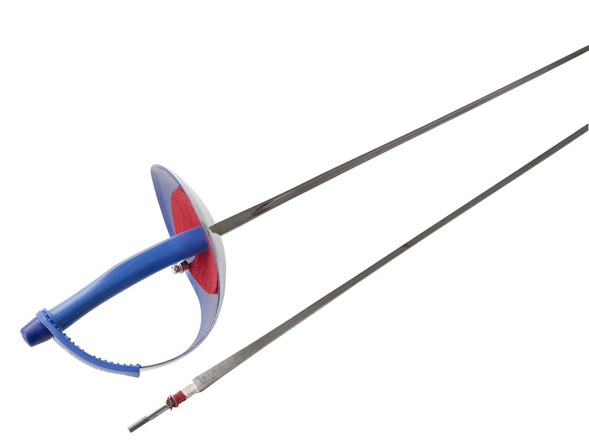

The sabre is a light cutting and slashing weapon that targets the entire body above the waist, including the arms and head, but not the hands.
Points are scored by making contact with the edge or the tip of the blade on the opponent's valid target area.
Sabre fencing follows the rules of "right of way," which means that the fencer who initiates an attack has priority to score a point.
Sabre fencing is typically done in a series of three-minute bouts, with the winner being the first to score 15 points or the fencer with the most points at the end of the time limit.